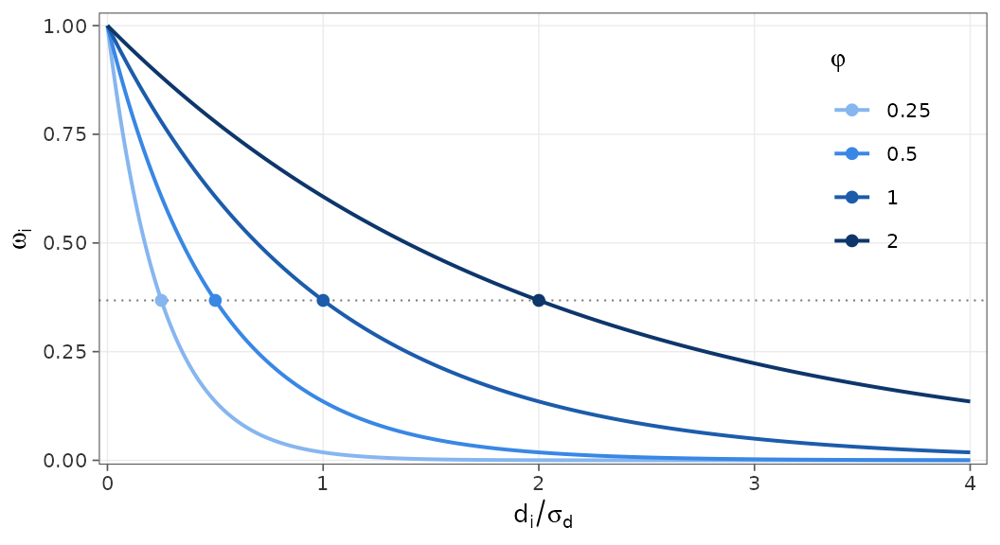
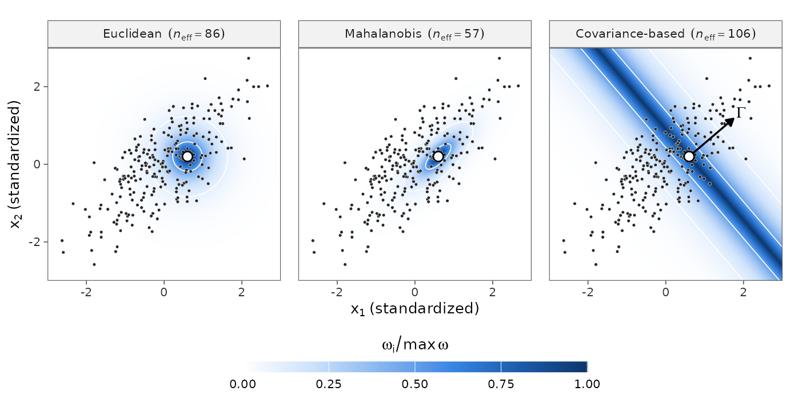
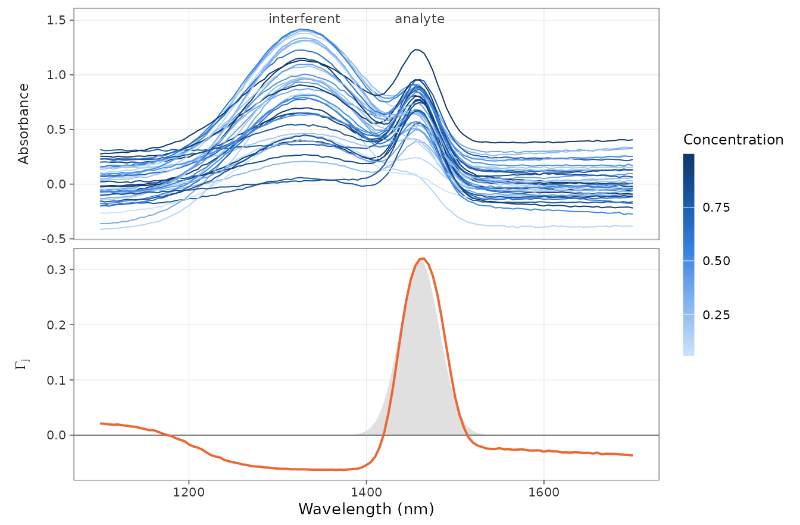
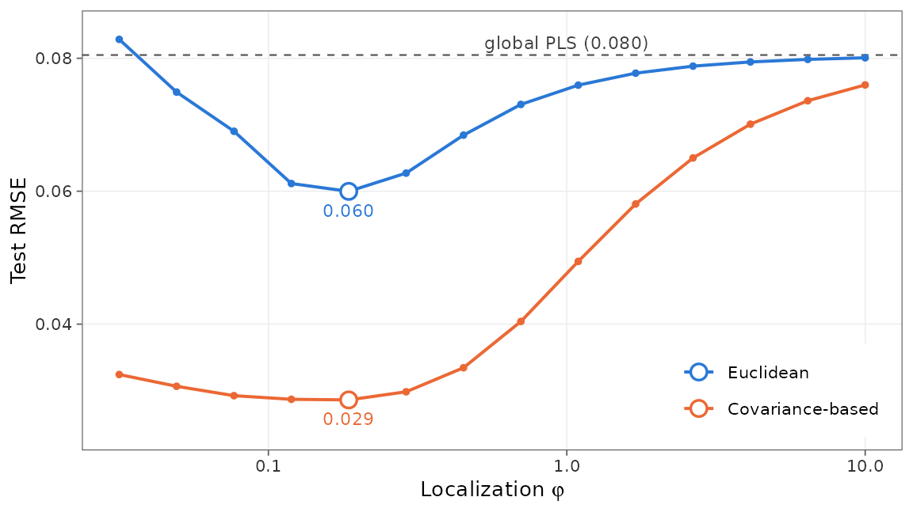
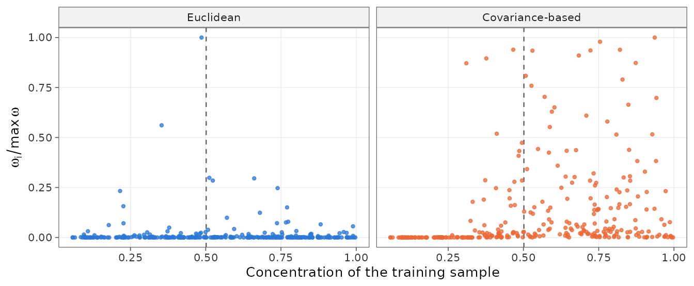
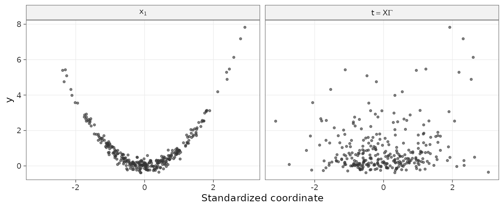
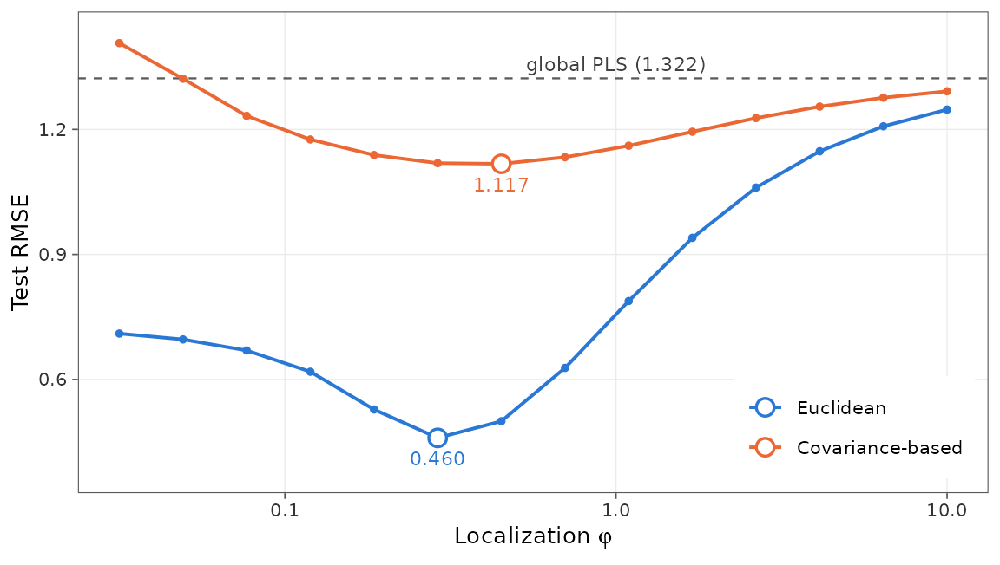

LW-PLS fits a separate model around every query sample, and that
model is only as good as the training samples it is built on. The
similarity argument decides which samples these are: it
sets how the distance between a training sample and the query is
measured before the distance is turned into a weight. This article
explains the two indexes available in lwpls, shows with simulated data
when each one works and when it fails, and ends with practical advice
for choosing between them.
One weight function, two distances
For a query sample \(x_q\), the training sample \(x_i\) receives the weight
\[ \omega_i = \exp\left(-\frac{d_i}{\sigma_d \, \varphi}\right), \]
where \(d_i\) is its distance to the
query, \(\sigma_d\) is the standard
deviation of the distances of all training samples and \(\varphi\) is the localization
parameter. Dividing by \(\sigma_d\)
makes \(\varphi\) unitless: a training
sample that is \(\varphi\) standard
deviations farther from the query than the nearest one gets \(e^{-1} \approx 0.37\) times the weight of
the nearest one, whatever the index (Figure 1). The weights only matter
up to a constant factor, since multiplying all of them by the same
number leaves the weighted PLS model unchanged.

Figure 1. Similarity weight as a function of the distance, for four localization values. Each curve crosses \(e^{-1}\) (dotted line) at \(d_i / \sigma_d = \varphi\) (points).
The two indexes therefore differ only in \(d_i\). Both, and the Mahalanobis distance that we use below for comparison, are quadratic forms of the difference \(\Delta_i = x_i - x_q\) between the standardized predictors:
\[ d_i^2 = \Delta_i^\top M \, \Delta_i, \]
| Distance | \(M\) | Shape of the neighborhood | In lwpls |
|---|---|---|---|
| Euclidean | \(I\) | sphere | similarity = "euclidean" |
| Mahalanobis | \(S^{-1}\) | ellipsoid along the correlations of \(X\) | no |
| Covariance-based | \(\Gamma \Gamma^\top\) | slab perpendicular to \(\Gamma\) | similarity = "covariance" |
Euclidean distance
Write the covariance matrix of the standardized predictors as \(S = \sum_k \lambda_k v_k v_k^\top\), with principal components \(v_k\) and variances \(\lambda_k\). The Euclidean distance is
\[ d_i^2 = \lVert \Delta_i \rVert^2 = \sum_k \left(v_k^\top \Delta_i\right)^2 . \]
Every direction enters the sum with the same coefficient, but for two random samples the term of component \(k\) is \(2 \lambda_k\) on average. The distance is therefore dominated by the largest sources of variation in \(X\), whether they are related to the outcome or not. In spectra, these are often baseline shifts, scattering or interfering compounds. The Euclidean distance does not use the outcome at all.
The Mahalanobis distance, \(M = S^{-1}\), divides each term by \(\lambda_k\) so that every component counts equally. It is often what “covariance-based distance” means, but it uses the covariance among the predictors. It is not available in lwpls: with more wavelengths than samples \(S\) cannot be inverted, and it inflates the components of smallest variance, which are mostly noise.
Covariance-based distance
Covariance-based LW-PLS (CbLW-PLS; Hazama and Kano, 2015) uses the covariance between the predictors and the outcome. With centered \(X\) and \(y\), the unit vector \(w\) that maximizes \(\operatorname{cov}(Xw, y) \propto w^\top X^\top y\) is, by the Cauchy–Schwarz inequality \(w^\top X^\top y \le \lVert w \rVert \, \lVert X^\top y \rVert\),
\[ \Gamma = \frac{X^\top y}{\lVert X^\top y \rVert}. \]
\(\Gamma\) is the first weight vector of a PLS model and \(t = X\Gamma\) is its first score. The distance is measured along this direction only:
\[ d_i = \left| \Gamma^\top (x_i - x_q) \right| = |t_i - t_q| . \]
A one-component PLS model predicts \(\hat y = \bar y + b \, t\), so \(|\hat y_i - \hat y_q| = |b| \, d_i\). The factor \(|b|\) cancels in \(d_i / \sigma_d\): the covariance-based weights are those obtained from the distance between the predictions of a one-component global PLS model. The neighbors of the query are the training samples that this simple model predicts to have a similar outcome.
Since \(M = \Gamma\Gamma^\top\) has
rank one, all the directions perpendicular to \(\Gamma\) are ignored: samples far from the
query in \(X\) are full neighbors if
they have the same score \(t\). With
several outcomes (or classes, coded as indicators), \(\Gamma = X^\top Y / \lVert X^\top Y
\rVert_F\) has one column per outcome and \(d_i = \lVert \Gamma^\top (x_i - x_q)
\rVert\). Robust models (robust = TRUE) compute
\(\Gamma\) with the initial weights of
partial robust M-regression, so that outliers do not distort it.
The three neighborhoods side by side
Two correlated predictors and a nonlinear outcome are enough to see the shapes:
set.seed(2026)
n <- 250
x1 <- rnorm(n)
x2 <- 0.75 * x1 + sqrt(1 - 0.75^2) * rnorm(n)
y <- sin(1.5 * x1) + 0.3 * x2 + rnorm(n, sd = 0.1)
x <- scale(cbind(x1, x2))
gamma <- crossprod(x, y - mean(y))
gamma <- drop(gamma / sqrt(sum(gamma^2)))
gamma
#> x1 x2
#> 0.7601460 0.6497523
query <- c(0.6, 0.2)
distance <- list(
"Euclidean" = function(z) sqrt(rowSums(sweep(z, 2, query)^2)),
"Mahalanobis" = function(z) sqrt(mahalanobis(z, query, cov(x))),
"Covariance-based" = function(z) abs(drop(sweep(z, 2, query) %*% gamma))
)
Figure 2. Weights of the three distances around the same query (white point) with \(\varphi = 0.5\), relative to the largest one, with contour lines at 0.1 and 0.5. The arrow is \(\Gamma\), and \(n_\text{eff} = (\sum \omega_i)^2 / \sum \omega_i^2\) is the effective number of neighbors.
The Euclidean neighborhood is a circle. The Mahalanobis neighborhood stretches along the main axis of the cloud, the direction of largest variance of \(X\). The covariance-based neighborhood is a band across that same axis: here \(\Gamma\) points along it, because that is where the predictors covary with \(y\), and differences along \(\Gamma\) are exactly what the covariance-based distance measures.
When the covariance-based index helps
The simulated spectra below contain three sources of variation: an analyte band whose absorbance saturates with the concentration (the outcome), so that the relationship is nonlinear; a large interfering band; and baseline offsets and slopes. Only the analyte is related to the outcome, while most of the variance of \(X\) comes from the interferent and the baseline.
wavelength <- seq(1100, 1700, by = 5)
band <- function(center, width) exp(-0.5 * ((wavelength - center) / width)^2)
simulate_spectra <- function(n) {
concentration <- runif(n, 0.05, 1)
absorbance <- 1 - exp(-2.5 * concentration)
interferent <- runif(n, 0, 1.5)
offset <- rnorm(n, sd = 0.15)
slope <- rnorm(n, sd = 0.1)
x <- outer(0.8 * absorbance, band(1460, 22)) +
outer(interferent, band(1330, 70)) +
outer(offset, rep(1, length(wavelength))) +
outer(slope, (wavelength - 1400) / 300) +
matrix(rnorm(n * length(wavelength), sd = 0.004), n)
colnames(x) <- paste0("nm", wavelength)
list(x = x, y = concentration)
}
set.seed(7)
train <- simulate_spectra(300)
test <- simulate_spectra(300)We compute \(\Gamma\) on the standardized training spectra, as lwpls does, and measure how well the score \(t = X\Gamma\) tracks the outcome:
x_train <- scale(train$x)
gamma_spectra <- crossprod(x_train, train$y - mean(train$y))
gamma_spectra <- drop(gamma_spectra / sqrt(sum(gamma_spectra^2)))
cor(drop(x_train %*% gamma_spectra), train$y)
#> [1] 0.8557298
Figure 3. Top: 40 training spectra, colored by their concentration. Bottom: the covariance direction \(\Gamma\), with the analyte band in gray. \(\Gamma\) peaks on the analyte band; its small, flat loading elsewhere comes from a chance correlation of the outcome with the interferent and the baseline.
We then fit LW-PLS with both indexes over a range of localization values and compute the test RMSE. A very large localization gives nearly equal weights, that is, a global PLS model, which we use as a reference:
rmse_by_localization <- function(train, test, num_comp, localization) {
grid <- expand.grid(localization = localization,
similarity = c("euclidean", "covariance"),
stringsAsFactors = FALSE)
grid$rmse <- mapply(function(phi, index) {
fit <- lwpls_fit(train$x, train$y, num_comp = num_comp,
localization = phi, similarity = index)
sqrt(mean((test$y - predict(fit, test$x)$.pred)^2))
}, grid$localization, grid$similarity)
grid
}
global_rmse <- function(train, test, num_comp) {
fit <- lwpls_fit(train$x, train$y, num_comp = num_comp, localization = 1e6)
sqrt(mean((test$y - predict(fit, test$x)$.pred)^2))
}
localization_grid <- 10^seq(-1.5, 1, length.out = 14)
spectra_rmse <- rmse_by_localization(train, test, num_comp = 4, localization_grid)
spectra_global <- global_rmse(train, test, num_comp = 4)
# Best localization of each index
do.call(rbind, lapply(split(spectra_rmse, spectra_rmse$similarity),
function(d) d[which.min(d$rmse), ]))
#> localization similarity rmse
#> covariance 0.1858792 covariance 0.02859642
#> euclidean 0.1858792 euclidean 0.05997618
spectra_global
#> [1] 0.0804894
Figure 4. Test RMSE of LW-PLS with 4 components on the simulated spectra. Open circles mark the best localization of each index, with its RMSE; the dashed line is the global PLS model.
The covariance-based index halves the error of the Euclidean index.
The weights of a single query show why. lwpls_local()
reports the effective number of neighbors of each prediction, and the
weights themselves follow from the formulas above:
query_id <- which.min(abs(test$y - 0.5))
query_x <- test$x[query_id, , drop = FALSE]
z_query <- (drop(query_x) - attr(x_train, "scaled:center")) /
attr(x_train, "scaled:scale")
d_euclidean <- sqrt(rowSums(sweep(x_train, 2, z_query)^2))
d_covariance <- abs(drop(sweep(x_train, 2, z_query) %*% gamma_spectra))
relative_weights <- function(d, phi) exp(-(d - min(d)) / (sd(d) * phi))
query_fits <- lapply(c(euclidean = "euclidean", covariance = "covariance"),
function(index) {
lwpls_fit(train$x, train$y, num_comp = 4, localization = 0.2,
similarity = index)
})
sapply(query_fits, function(fit) lwpls_local(fit, query_x)$reliability$n_eff)
#> euclidean covariance
#> 13.02410 71.92348
Figure 5. Weights of the training samples for one test spectrum with a concentration of 0.5 (dashed line), against their own concentration (\(\varphi = 0.2\), weights relative to the largest one).
The Euclidean neighbors are close to the query in interferent and baseline, not in concentration, so they are spread over the whole concentration range. The covariance-based index gives almost no weight to the samples below 0.3. Its neighborhood is still broad and asymmetric, for two reasons: saturation compresses the differences between high concentrations along \(\Gamma\), and \(\Gamma\) keeps a small loading on the interferent and the baseline (Figure 3).
When the covariance-based index fails
\(\Gamma\) only captures the linear covariance between the predictors and the outcome. When the outcome is a symmetric function of a predictor, that covariance vanishes: with \(x_1\) standard normal and \(y = x_1^2\), \(\operatorname{cov}(x_1, y) = E[x_1^3] = 0\). \(\Gamma\) is then set by chance correlations in the training set.
simulate_symmetric <- function(n) {
x <- matrix(rnorm(n * 5), n, dimnames = list(NULL, paste0("x", 1:5)))
list(x = x, y = x[, 1]^2 + rnorm(n, sd = 0.2))
}
set.seed(11)
train_sym <- simulate_symmetric(300)
test_sym <- simulate_symmetric(300)
x_sym <- scale(train_sym$x)
gamma_sym <- crossprod(x_sym, train_sym$y - mean(train_sym$y))
gamma_sym <- drop(gamma_sym / sqrt(sum(gamma_sym^2)))
round(gamma_sym, 2)
#> x1 x2 x3 x4 x5
#> 0.46 0.10 -0.06 0.74 -0.48
cor(drop(x_sym %*% gamma_sym), train_sym$y)
#> [1] 0.148371
Figure 6. The outcome against \(x_1\), the predictor it depends on (left), and against the score \(t = X\Gamma\) that the covariance-based distance uses (right).
symmetric_rmse <- rmse_by_localization(train_sym, test_sym, num_comp = 2,
localization_grid)
symmetric_global <- global_rmse(train_sym, test_sym, num_comp = 2)
do.call(rbind, lapply(split(symmetric_rmse, symmetric_rmse$similarity),
function(d) d[which.min(d$rmse), ]))
#> localization similarity rmse
#> covariance 0.4506570 covariance 1.1174741
#> euclidean 0.2894266 euclidean 0.4598991
symmetric_global
#> [1] 1.322462
Figure 7. Test RMSE of LW-PLS with 2 components for \(y = x_1^2\). Open circles mark the best localization of each index, with its RMSE; the dashed line is the global PLS model.
The Euclidean neighborhoods still follow \(x_1\), while the covariance-based ones mostly follow noise: the covariance-based error is more than twice the Euclidean one, and only a little below that of the global model. The same happens whenever the local behavior depends on a direction that the global covariance \(X^\top y\) does not capture, for example regimes defined by other constituents of the samples (such as matrix effects in emission spectroscopy).
Choosing in practice
- Look at \(\Gamma\) first. Computing it takes one line (see above). If it resembles the spectral signature of the property to predict and the score \(t = X\Gamma\) is well correlated with the outcome, the covariance-based index is likely to help. If \(\Gamma\) looks like noise, or the correlation is weak, prefer the Euclidean index.
- The covariance-based index suits data in which most of the variance of \(X\) is unrelated to the outcome (interferents, baseline, scattering, temperature) and the outcome changes monotonically with the relevant signal, as in many NIR, Raman or LIBS calibrations.
- The Euclidean index suits nonmonotonic relationships, local behavior driven by directions other than \(X^\top y\), and data whose irrelevant variation has already been removed by preprocessing (SNV, derivatives), since the Euclidean distance then reflects the relevant variation. It also does not depend on the outcome, so it cannot be misled by chance correlations.
-
Tune both. The best localization differs between
the indexes (Figures 4 and 7), so
similarityshould be tuned together withlocalizationandnum_comp, as shown invignette("lwpls").
References
- Kim, S., Kano, M., Nakagawa, H. and Hasebe, S. (2011). Estimation of active pharmaceutical ingredients content using locally weighted partial least squares and statistical wavelength selection. International Journal of Pharmaceutics, 421(2), 269–274.
- Hazama, K. and Kano, M. (2015). Covariance-based locally weighted partial least squares for high-performance adaptive modeling. Chemometrics and Intelligent Laboratory Systems, 146, 55–62.